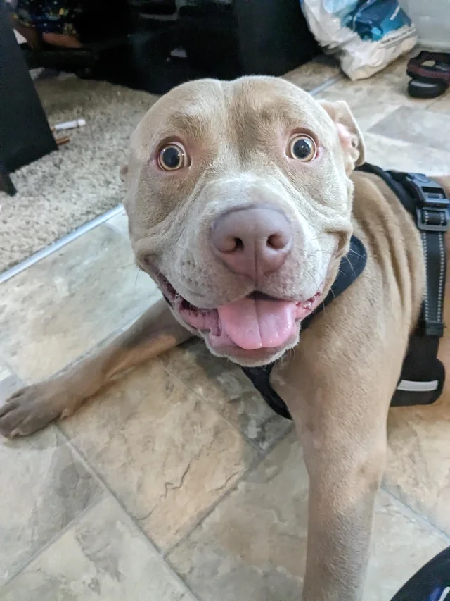
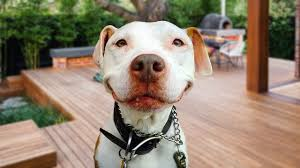

Pit bull, fighting dog developed in 19th-century England, Scotland, and Ireland from Bulldog and terrier ancestry for hunting, specifically for capturing and restraining semi-feral livestock. The name has been applied historically to several breeds of dogs—including the Bull Terrier, American Staffordshire Terrier, and Staffordshire Bull Terrier—but it is not recognized as a distinct breed by the American Kennel Club. In 1898 the United Kennel Club became the first such organization to recognize the breed, which it calls the American Pit Bull Terrier. The American Dog Breeders Association (ADBA)—whose primary focus is fostering the positive features of the American Pit Bull Terrier, such as its loyalty, dedication, and athleticism—also recognizes the breed.
Breed

Amazing caption
Although pit bulls were originally bred and trained to display aggression against other dogs, aggression against human beings was not encouraged, because, even while fighting, the dogs had to be handled by their trainers. Dogs displaying this trait were not selected for breeding.
However, the resurgence of dogfighting—illegal in the United States, Great Britain, and many other countries—led irresponsible breeders to encourage such traits in their animals and to mistreat them in order to induce a vicious temperament. Well-publicized attacks on people by dogs identified as pit bulls led to the passage of legislation in some jurisdictions that bans or restricts the keeping of the breeds. Some humane societies routinely euthanize dogs thought to be pit bulls that come into their possession, because they deem the dogs to be unsuitable for adoption.
In response to the breed’s negative reputation, numerous pit bull owners and owner organizations (such as the ADBA) routinely condemn the breed’s mistreatment by irresponsible owners, arguing that any dog breed is capable of similar aggressive behavior when trained improperly.
Upkeep
The breed is not well suited for dog parks. Although an individual pit bull may have a history of getting along with other dogs, that can change when it reaches maturity (about 18 months of age) or if it is challenged by another dog. In fact, pit bull experts advise multi-dog families to have a breaking stick to pry open a pit bull’s jaws in case it fights with another dog. The pit bull needs a fenced yard in which to exercise. Because of the breed’s athletic and tenacious nature, extra care should be taken to ensure that the fence is secure, with strong and tall sides that cannot be tunneled under. Time in the yard should be supplemented with leash walks, and a pit bull should wear a harness that limits the dog’s ability to pull the handler. Other recommended activities include games; agility, obedience, and scent work; coursing; flyball; and anything else that engages both the dog’s mind and its body. The breed excels at the sport of weight pulling. It may or may not like swimming.
Coat care is minimal, consisting of occasional bathing and weekly brushing. Pit bulls do not like extreme cold nor heat.
The breed is susceptible to various bone diseases, notably canine hip dysplasia. Treatments include surgery and physical therapy. Other issues include thyroid and heart conditions.
Temperament

Pit bulls are controversial when it comes to temperament, in part because they can be dogs of extremes. For many people, they are ideal companions: playful, willing to please, and moderately active. They are fun, generally obedient dogs that love to play games, especially those that are challenging and physical. Pit bulls are also generally quiet in the house and are not prolific barkers. They are fair watchdogs and protectors. Although stubborn at times, pit bulls are fast learners, capable of advanced obedience.
The majority of pit bulls lead peaceful lives. However, the dogs were bred to be tenacious fighters. According to some sources, this can lead to altercations with other dogs and sometimes with people. Pit bulls and pit bull mixes are responsible for more human and canine fatalities and severe trauma than all other breeds and mixes combined. Many fatal attacks are carried out by household pit bulls that, for unknown reasons, attack their owners or other pets. Although the pit bull appears no more likely—in fact, probably even less likely—to bite than many other breeds are, it is more likely to continue an attack. This, combined with its jaw and body strength, can result in the disfigurement, dismemberment, or death of its victim. Proponents of the pit bull believe that its behavior depends on how it is raised. They note that the dog’s scores on temperament tests are similar to those of dog breeds considered to be friendly, such as Golden Retrievers. Although pit bulls that attack people are in the minority, their fatality record indicates that they should be handled with an understanding of potential aggression.
It should be noted that these claims are a traditional and widely accepted generalization about the breed, and the behavior of individual pit bulls may differ.